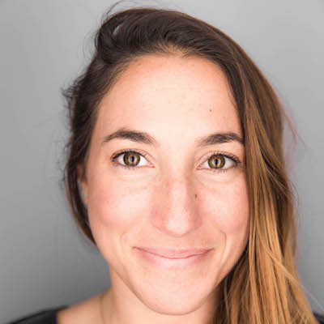

Forum is rooted in the philosophy that we need the support of a community to become our full-voiced selves. For a lot of us that means an understanding of how we are feeling, what we are needing and the ability to express ourselves in a confidential space. Forum will draw out our strengths and help support our areas of weakness. From the observations of our group (never advice), we can gain a deeper awareness of how we are wired and what we need to find our inner happiness.
Your Forum is a unique space to be real. Lay it all out there. And for that shared experience and safety to be what brings a sense of belonging.
It starts with commitment. We're all “busy” but Forum is something you prioritize. Forum sessions are once a month, three hours long and typically take place on a weeknight (with dinner). The sessions are facilitated by Jessica but members are encouraged to develop skills by being a session coach or host.
We use a highly structured format to ensure each person has an opportunity to share, in a confidential and safe environment, their current challenges, aspirations and frustrations. The group learns from each others shared experiences and approaches to problem solving. Again, there is no advice giving. We are here to listen and learn from each others experiences.
No bachelorette or new mama shenanigans. The focus isn’t on any one person, in fact we make sure that introverts and extroverts share the same floor space. And unlike your work offsite we are going to get personal. The space we are going to create together will stand alone as a place to bring the issues in life that cross all boundaries and do not have a home elsewhere - the highest highs and lowest lows. If we do it right, we will be authentic, where what’s happening inside is matched by what is coming out on the outside.
Vince has been running Principles Forum for several years which focused more on young CEOs which tend to be all men. We are leveraging Vince’s experience, philosophy and structure but applying it to a different group of new leaders... I.e. YOU!
Forum is $1,500/year. This includes all expenses associated with the weekend retreat and facilitation of forum over 12 months. If your company covers professional development you can spend it on Forum. Forum is a peer to peer women leadership mentoring group. We will not only help manage critical issues that come up in your professional life but also help you develop better communication skills for critical conversations and collaboration.
Jessica’s day job is Head of People Strategy at Atlassian where she focuses on developing the best teams. Jessica is a former global operations lead specializing in corporate social responsibility. She’s consulted on issues ranging from employee engagement, women’s empowerment and collaborative office space design. Jessica has been involved in the SF community through serving as President of the Girls on the Run Bay Area Associate Board, Co-founding the SF Cycling Club and joining leadership trips through the Join Distribution Committee. Currently Jessica is working on raising funding for NARAL and women’s rights. It’s through her community efforts that Jessica brings forth her passion for building forums that empower, encourage and educate others.
Vince is an entrepreneurial leader in the social sector, he enjoys bringing diverse people together to accomplish significant goals. Vince has been a successful CEO with hundreds of employees and also on the senior management team riding herd over 20 million members at 2,500 locations with $4 Billion in revenues. Authoring a number of leadership-oriented resource books has integrated into Vince’s work with executive forums and professional associations in on every continent.